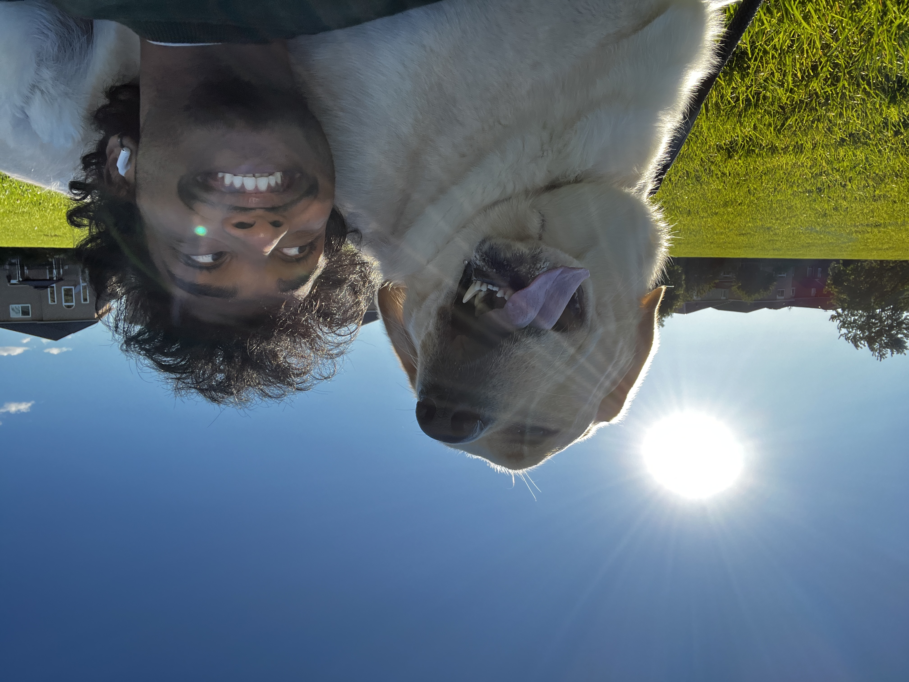
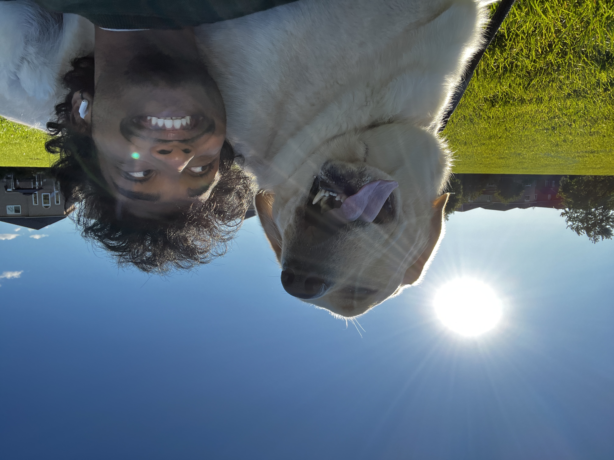

About Me
Hey there! I'm Rusanth, a passionate software developer with a love for turning complex ideas into elegant digital solutions. When I'm not coding, you'll find me exploring new technologies, playing with my furry companion, or diving into creative projects.
My journey in tech is driven by curiosity and a desire to create meaningful experiences. I believe in the power of clean code, innovative design, and solving real-world problems through technology.
My Interests

Meet my adventure buddy! Together, we explore the world, share coding breaks, and prove that great partnerships come in all forms.
Professional Journey
Classic Bowl Cashier
Worked at classic bowl as a cashier
2021 - PresentPersonal Project Development
Creating innovative web and game applications
2021 - Present